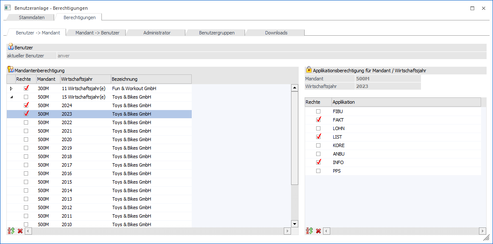
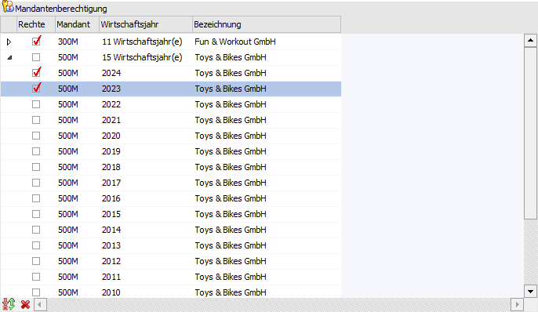
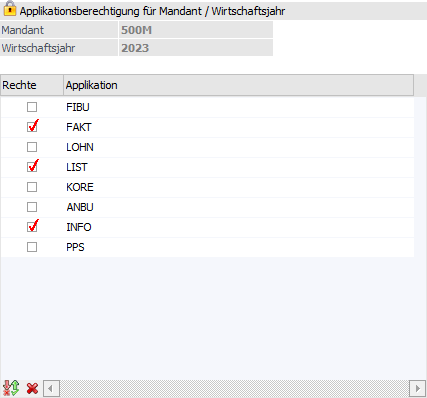

Benutzeranlage - Register "Berechtigungen - Benutzer -> Mandant"
Im Unterregister "Benutzer -> Mandant" kann definiert werden, auf welche Mandanten und Applikationen ein Benutzer zugreifen darf. D.h. über den Benutzer wird gesteuert, auf welche Mandanten bzw. Wirtschaftsjahre zugegriffen werden darf.
Hinweis
Dieses Register kann nur dann bearbeitet werden, wenn der Benutzer kein Administrator oder kein Datenadministrator ist (diese beiden Benutzertypen haben immer Zugriff auf alle Mandanten).

Benutzer

Ø aktueller Benutzer
An dieser Stelle wird der aktuell gewählt Benutzer angezeigt. Für diesen werden die folgenden Einstellungen getätigt.
Mandantenberechtigung

In der linken Tabelle werden alle Mandanten angezeigt, mit dem das Programm arbeiten kann. Voraussetzung für die Anzeige eines Mandanten ist, dass dieser im Programm Datenbank Verbindungen hinterlegt wurde.
In der ersten Spalte kann ein DrillDown durchgeführt werden, d.h. man kann sich die Wirtschaftsjahre (sofern vorhanden) einzeln anzeigen lassen.
Ø Rechte
Durch Aktivieren der Checkbox wird für den Benutzer die Berechtigung erteilt, mit diesen Mandanten zu arbeiten. Die Rechte können pro Mandant bzw. auch pro Wirtschaftsjahr vergeben werden. Wird der "Haupteintrag" aktiviert, dann werden auch die dazugehörigen Wirtschaftsjahre mit aktiviert. Es kann aber auch jeder Eintrag einzeln bearbeitet werden. Z.B. kann es so eingestellt werden, dass der Benutzer zwar das aktuelle Wirtschaftsjahr bearbeiten darf, das Vorjahr soll aber nicht mehr im Zugriff sein.
Ø Mandant
Hier wird der jeweilige Mandant angezeigt, wobei es auch möglich ist, dass eine Mandantennummer mehrmals vorkommt. In diesem Fall handelt es sich um mehrere Wirtschaftsjahre eines Mandanten.
Ø Wirtschaftsjahr
In dieser Spalte wird das jeweilige Wirtschaftsjahr und der Beginn des Wirtschafsjahres angezeigt (2024/1 bedeutet Wirtschaftsjahr 2024, Beginn im Monat "Januar"). Bei den "Haupteinträgen" wird immer angezeigt, wie viele Wirtschaftsjahre vorhanden sind.
Ø Bezeichnung
Hier wird die aktuelle Bezeichnung des Mandanten angezeigt.
Tabellenbuttons "Mandanten"

Ø Auswahl umkehren
Durch Anklicken des Umkehren-Buttons kann die vorgenommene Einstellung in das Gegenteil gewandelt werden.
Beispiel
Es stehen 20 Mandanten zur Verfügung, ein Benutzer darf einen Mandanten nicht bearbeitet. Es wird nur dieser eine Mandant aktiviert, durch Drücken des Umkehr-Buttons wird die Selektion umgewandelt und alle Mandanten, die zuerst deselektiert waren, sind jetzt selektiert. Es müssen nicht 19 Mandanten aktiviert werden.
Ø keine Auswahl
Durch Anklicken des Buttons "keine Auswahl" werden alle getroffenen Selektionen gelöscht.
Ø Ausgabe Excel
Durch Anwahl des Buttons "Ausgabe Excel" wird der Inhalt der Tabelle an Microsoft Excel übergeben.
Ø Tabelleneinstellungen speichern
Die Spalten einer Tabelle können grundsätzlich an beliebige Positionen verschoben, bzw. in der Breite entsprechend angepasst werden. Durch Anwahl des Buttons "Tabelleneinstellungen speichern" werden die Einstellungen benutzerspezifisch gespeichert und bei dem nächsten Aufruf des Programmpunktes wieder vorgeschlagen.
Ø Gesamteinstellungen speichern
Im Gegensatz zu "Tabelleneinstellungen speichern" können mit "Gesamteinstellungen speichern" mehrere Tabellenaufbauten gespeichert und nach Wunsch geladen werden. Zusätzlich werden Sonderfunktionen der Tabelle (z.B. "Spalte gruppieren") ebenfalls bei der Speicherung bedacht.
Tabelle "Applikationsberechtigung für Mandant / Wirtschaftsjahr"

In der rechten Tabelle werden alle Applikationen angezeigt, für welche die Berechtigungen vergeben werden können, wobei hier die Berechtigungen ebenfalls pro Mandant bzw. pro Wirtschaftsjahr vergeben werden können. Über der Tabelle wird der jeweils ausgewählte Mandant (linke Tabelle) angezeigt. Wurde auch ein einzelnes Wirtschaftsjahr gewählt, wird auch diese Information angezeigt.
Ø Mandant
An dieser Stelle wird der aktuell gewählte Mandant angezeigt.
Ø Wirtschaftsjahr
Hier wird das aktuell gewählte Wirtschaftsjahr angezeigt.
Ø Rechte
Wird die Checkbox aktiviert, dann hat der Benutzer den Zugriff auf das entsprechende Programm. Bleibt die Checkbox inaktiv, dann hat der Benutzer keine mit diesem Mandanten auf das Programm zuzugreifen.
Achtung
Wurden einem Benutzer Applikationsrechte für "alle Wirtschaftsjahre" entzogen, so können diese in einem speziellen Wirtschaftsjahr nicht wieder aktiviert werden.
Ø Applikation
In dieser Spalte wird der Name der Applikation angezeigt.
Tabellenbuttons "Applikationen"
Ø Auswahl umkehren
Durch Anklicken des Umkehr-Buttons wird die bestehende Selektion invertiert.
Beispiel
Für einen Benutzer sollen alle Programme außer der Finanzbuchhaltung gesperrt werden. Anstatt alle Checkboxen für die restlichen Programme zu deaktivieren, wird nur die Checkbox Finanzbuchhaltung deaktiviert und danach der Umkehr-Button angeklickt. Dadurch sind nun alle Programme, ausgenommen der FIBU, deaktiviert.
Ø keine Auswahl
Durch Anklicken des Buttons "keine Auswahl" werden alle getroffenen Selektionen gelöscht.
Ø Ausgabe Excel
Durch Anwahl des Buttons "Ausgabe Excel" wird der Inhalt der Tabelle an Microsoft Excel übergeben.
Ø Tabelleneinstellungen speichern
Die Spalten einer Tabelle können grundsätzlich an beliebige Positionen verschoben, bzw. in der Breite entsprechend angepasst werden. Durch Anwahl des Buttons "Tabelleneinstellungen speichern" werden die Einstellungen benutzerspezifisch gespeichert und bei dem nächsten Aufruf des Programmpunktes wieder vorgeschlagen.
Ø Gesamteinstellungen speichern
Im Gegensatz zu "Tabelleneinstellungen speichern" können mit "Gesamteinstellungen speichern" mehrere Tabellenaufbauten gespeichert und nach Wunsch geladen werden. Zusätzlich werden Sonderfunktionen der Tabelle (z.B. "Spalte gruppieren") ebenfalls bei der Speicherung bedacht.